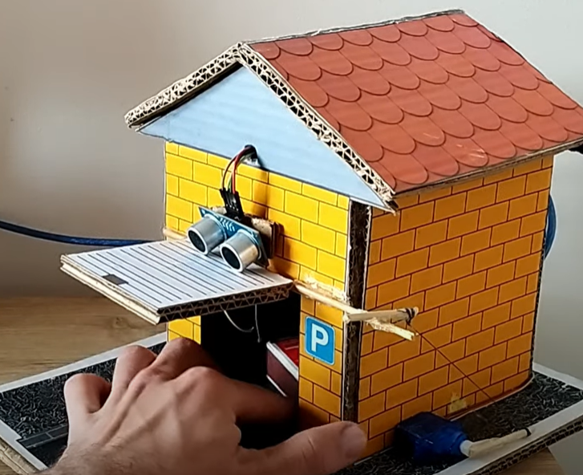

Objetivo:
Diseñar y construir un garaje automatizado que se abra y cierre automáticamente utilizando un sensor de distancia ultrasónico para detectar la presencia de un vehículo.
Materiales necesarios:
*Placa Arduino UNO R3
*Plantilla inversa
*Lamina de carton.
*Un popote.
*Un palo de pincho
*Pegamento
*Sensor de distancia HC SR04.
*Serveomotor SG90.
*Cables tipo jumper macho hermbra.
*Cables tipo jumper macho macho
Pasos del proyecto
1. Diseño del garaje: Comienza diseñando el garaje. Debe ser lo suficientemente grande para acomodar un vehículo a escala (por ejemplo, un modelo de automóvil pequeño). Asegúrate de que haya una puerta que se pueda abrir y cerrar.
2. Montaje del sensor de distancia: Conecta el sensor ultrasónico a la placa Arduino siguiendo el datasheet del sensor. Asegúrate de alimentar correctamente el sensor.
3. Programación: Escribe el código necesario en el Arduino IDE (o software similar) para que el sensor de distancia detecte la presencia de un vehículo frente al garaje. Cuando se detecte un objeto a una distancia específica, el motor o servomotor debe activarse para abrir la puerta del garaje.
4. Construcción del sistema de apertura/cierre: Instala el motor o servomotor en la puerta del garaje de modo que pueda abrirse y cerrarse de manera controlada. Asegúrate de que la puerta se pueda bloquear en su posición abierta y cerrada.
5. Ensamblaje del garaje: Construye el garaje utilizando el material seleccionado. Asegúrate de que la puerta pueda moverse sin problemas.
6. Pruebas y ajustes: Realiza pruebas para asegurarte de que el sensor detecta correctamente la presencia de un vehículo y que el garaje se abre y cierra de manera adecuada. Realiza ajustes en el código y la mecánica según sea necesario.
